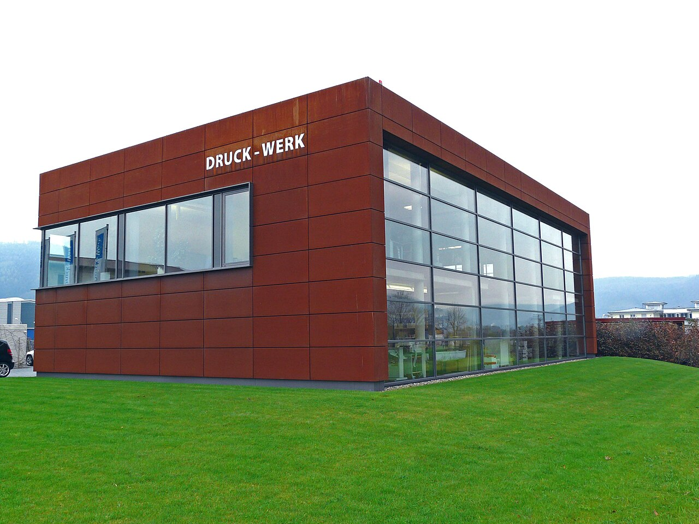
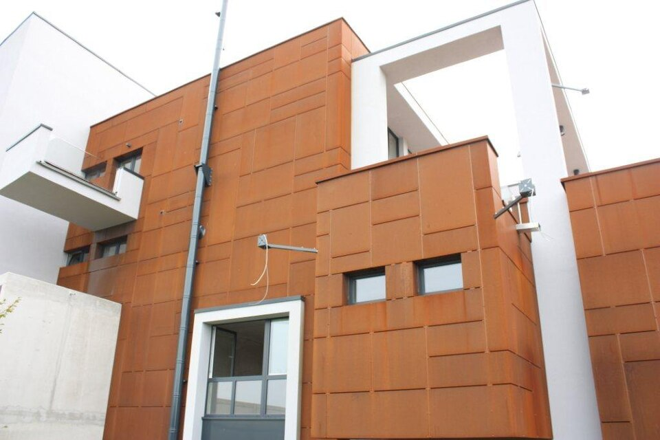
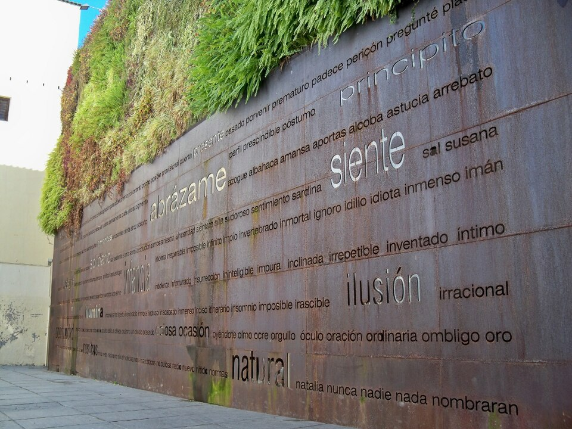
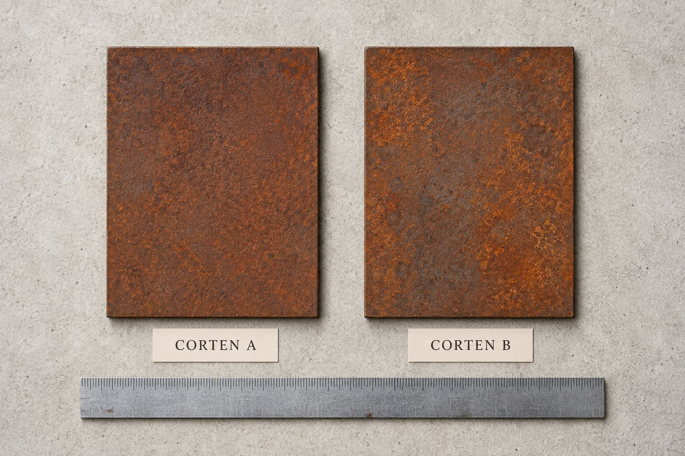
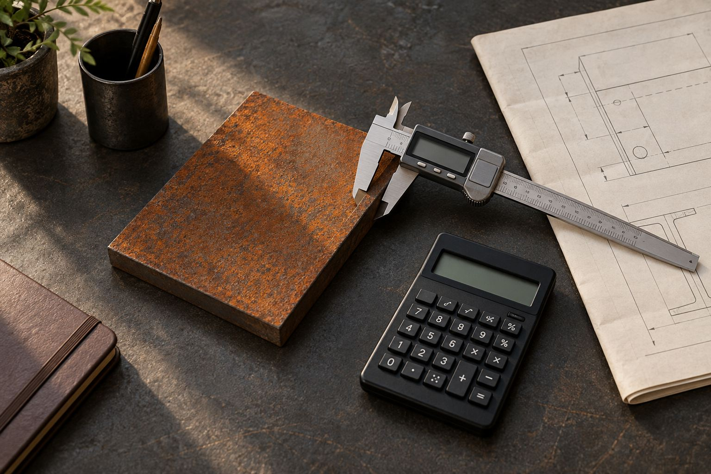

Credit where
it belongs.
Real photographs, credited to their original creators. The images illustrate material and application contexts.
None of these images is presented as a verified SHANDONG DAZHI facility, product shipment or completed project. Logos and trade names visible in independent industrial photographs belong to their owners and do not imply affiliation or endorsement.
The supplied images are resized versions of the originals and may be visually cropped by the page layout. No generative changes were made. Each Creative Commons image, including any crop or resized version, remains available under its listed license. The website design and text are separate from those image licenses.

KDB-Fassaden (Norman60) · Original source ↗ · CC BY-SA 3.0
Local files: weathering-facade.jpg. Changes: resizing and display crop where required. Share-alike license applies to this image and adapted versions.

Klaus-Dieter Braun, Speyer am Rhein · Original source ↗ · CC0 1.0
Local files: corten-cassette-facade.jpg. Changes: resizing and display crop where required.
{kind=link}

kdb-fassaden.de (Norman60) · Original source ↗ · CC BY-SA 3.0
Local files: corten-panel-detail.jpg. Changes: resizing and display crop where required. Share-alike license applies to this image and adapted versions.
{kind=link}
AndrewHenkelman · Original source ↗ · CC BY-SA 4.0
Local files: patina-detail.jpg, weathering-plate.jpg. Changes: resizing and display crop where required. Share-alike license applies to this image and adapted versions.
{kind=link}

Redbullnrn · Original source ↗ · CC BY-SA 4.0
Local files: weathering-landscape.jpg. Changes: resizing and display crop where required. Share-alike license applies to this image and adapted versions.

Daniel Capilla · Original source ↗ · CC BY-SA 4.0
Local files: weathering-sculpture.jpg. Changes: resizing and display crop where required. Share-alike license applies to this image and adapted versions.
{kind=link}

Jacinta Lluch Valero (jacilluch) · Original source ↗ · CC BY-SA 2.0
Local files: weathering-bridge.jpg. Changes: resizing and display crop where required. Share-alike license applies to this image and adapted versions.

Halis Çöllü · Original source ↗ · Pexels License
Local files: welding.jpg. Changes: resizing and display crop where required.

Giant Asparagus · Original source ↗ · Pexels License
Local files: container-port.jpg. Changes: resizing and display crop where required.

Rolled Alloys Specialty Metal Supplier · Original source ↗ · Pexels License
Local files: plate-waterjet.jpg. Changes: resizing and display crop where required.

Hoang NC · Original source ↗ · Pexels License
Local files: workshop.jpg. Changes: resizing and display crop where required.
Page-specific AI illustrations
These five editorial illustrations were created with OpenAI image generation on 20 September 2026. They represent material and application concepts, not certified material samples, actual inventory or completed supplier projects. JPEG encoding is used for web delivery; display cropping may vary by layout.



{kind=link}

{kind=link}
Typography
Barlow Condensed by Jeremy Tribby. Distributed under the SIL Open Font License 1.1. The font is hosted locally.